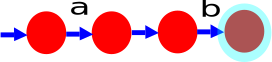
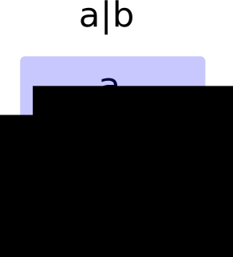
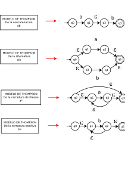

Autómatas finitos no determinísticos (AFN)
Continuación con la construcción del analizador léxico. Analizador léxico y escaner significa lo mismo, también se llama reconocedor de tokens. Para esto continuamos con el bloque construcción de thompson:

Otra forma de representar a los tokens se hace por medio de los autómatas.
Definición de autómata finito no determinístico (AFN). Esta formado por cinco elementos, esto desde su definición formal. Es un autómata que tiene transiciones con el símbolo cadena vacia (ε) o que tiene transiciones con el mismo símbolo a dos estados diferentes.
Considerando la misma parte del programa. Los tokens se representan por medio de expresiones regulares y después se transforma en AFN.
/* encuentra un cero */
float acopla0(char *s) {
if (!strncmp(s, "0.0", 3))
return 0.;
}
Los tokens que se identifican, son los siguientes:
FLOAT ID(acopla0) LPAREN CHAR STAR ID(s) RPAREN LBRACE IF LPAREN BANG ID(strncmp) LPAREN ID(s) COMMA STRING(0.0) COMMA NUM(3) RPAREN RPAREN RETURN REAL(0.0) SEMI RBRACE EOF
Siguiendo el proceso de transformación de ER a AFN, se usa la construcción de Thompson. Nos basamos en las operaciónes básicas de las ER.
Modern compiler implementation in C, Andrew W. Appel, Pág. 17-18
Clases léxicas. Podemos decir que los tokens, son: identificadores, palabras clave o palabras reservadas, delimitadores, números, operadores.
Función del analizador léxico. En pdf.
La representación de la concatenación de los símbolos a b. Esta representación se considera un modelo: entre a y b se escribe ε :

La representación de la alternativa a|b. Esta representación se considera un modelo: entre a y b se escribe ε entre los arcos vacios:

Los modelos de Thompson de las operaciones básicas de las expresiones regulares, se muestran en el siguiente diagrama:
